정보처리기사(구) (2008-05-11 기출문제)
1과목: 데이터 베이스
1. 관계데이터베이스의 정규화에 대한 설명으로 옳지 않은 것은?
- 정규화를 거치지 않으면 여러 가지 상이한 종류의 정보를 하나의 릴레이션으로 표현하여 그 릴레이션을 조작할 때 이상(Anomaly) 현상이 발생할 수 있다.
- 정규화의 목적은 각 릴레이션에 분산된 종속성을 하나의 릴레이션에 통합하는 것이다.
- 이상(Anomaly) 현상은 데이터들 간에 존재하는 함수종속이 하나의 원인이 될 수 있다.
- 정규화가 잘못되면 데이터의 불필요한 중복이 야기되어 릴레이션을 조작할 때 문제가 발생할 수 있다.
(정답률: 67%)

2. 뷰(View)에 대한 설명으로 옳지 않은 것은?
- 뷰는 CREATE 문을 사용하여 정의한다.
- 뷰의 삽입, 갱신, 삭제 연산에는 제약이 따른다.
- DBA는 보안 측면에서 뷰를 활용할 수 있다.
- 뷰는 정의는 ALTER 문을 이용하여 변경할 수 있다.
(정답률: 70%)
3. 데이터베이스의 정의에 관한 사항으로 거리가 먼 것은?
- Intergrated Data
- Redundancy Data
- Stored Data
- Shared Data
(정답률: 76%)
4. 릴레이션 R1에 저장된 튜플이 릴레이션 R2에 있는 튜플을 참조하려면 참조되는 튜플이 반드시 R2에 존재해야 한다는 무결성 규칙은?
- 개체 무결성 규칙(Entity Integrity Rule)
- 참조 무결성 규칙(Referential Integrity Rule)
- 영역 무결성 규칙(Domain Integrity Rule)
- 트리거 규칙(Trigger Rule)
(정답률: 83%)
5. 다음 자료에 대하여 선택(Selection) 정렬을 이용하여 오름차순으로 정렬하고자 한다. 2회전 후의 결과로 옳은 것은?
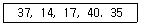
- 14, 17, 35, 37, 40
- 14, 17, 37, 40, 35
- 14, 37, 17, 40, 35
- 14, 17, 37, 35, 40
(정답률: 75%)
6. SQL 명령은 사용 용도에 따라 DDL, DML, DCL로 구분할 수 있다. 다음 중 나머지 셋과 성격이 다른 하나는?
- ALTER
- SELECT
- UPDATE
- DELETE
(정답률: 71%)
7. 조건을 만족하는 릴레이션의 수평적 부분집합으로 구성하며, 연산자의 기호는 그리스 문자 시그마(σ)를 사용하는 관계대수 연산은?
- Select
- Project
- Join
- Division
(정답률: 69%)
8. DBMS의 필수 기능에 해당하지 않는 것은?
- Definition facility
- Relation facility
- Control facility
- Manipulation facility
(정답률: 49%)
9. 물리적 데이터베이스 설계 수행시 결정사항으로 거리가 먼 것은?
- 어떤 인덱스를 만들 것인지에 대한 고려
- 성능 향상을 위한 개념 스키마의 변경 여부 검토
- 빈번한 질의와 트랜잭션들의 수행속도를 높이기 위한 고려
- 개념스키마와 외부스키마 설계
(정답률: 63%)
10. 트랜잭션의 특징으로 거리가 먼 것은?
- Atomicity
- Consistency
- Isolation
- Dependency
(정답률: 72%)
11. 택시 정거장에서 줄을 서서 순서대로 택시를 타는 것과 유사한 자료 구조는?
- 스택
- 큐
- 트리
- 그래프
(정답률: 71%)
12. 시스템 카탈로그(System Catalog)에 대한 설명으로 옳지 않은 것은?
- 시스템 카탈로그의 갱신은 무결성 유지를 위하여 SQL을 이용하여 사용자가 직접 갱신하여 한다.
- 데이터베이스에 포함되는 모든 데이터 객체에 대한 정의나 명세에 관한 정보를 유지 관리한다.
- DBMS가 스스로 생성하고 유지하는 데이터베이스 내의 특별한 테이블의 집합체이다.
- 카탈로그에 저장된 정보를 메타데이터(meta-data)라고도 한다.
(정답률: 78%)
13. 분산 데이터베이스시스템의 설명으로 옳지 않은 것은?
- 소프트웨어 개발비용이 감소한다.
- 지역 자치성이 보장된다.
- 시스템의 확장이 용이하다
- 신뢰도가 향상된다.
(정답률: 72%)
14. 해싱에서 동일한 홈 주소로 인하여 충돌이 일어난 레코드들의 집합을 의미하는 것은?
- Overflow
- Bucket
- Synonym
- Collision
(정답률: 50%)
15. 다음 트리를 전위 순회(Preorder Traversal)한 결과는?
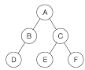
- A B D C E F
- D B A E C F
- D B E F C A
- A B C D E F
(정답률: 74%)
16. What is the quantity of tuples in consist of the relation?
- Degree
- Instance
- Domain
- Cardinality
(정답률: 67%)
17. 다음 표와 같은 판매실적 테이블에 대하여 서울지역에 한하여 판매액 내림차순으로 지점명과 판매액을 출력하고자 한다. 가장 적절한 SQL구문은?
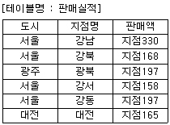
- SELECT 지점명, 판매액 FROM 판매실적 WHERE 도시=‘서울’ ORDER BY 판매액 DESC;
- SELECT 지점명, 판매액 FROM 판매실적 ORDER BY 판매액 DESC;
- SELECT 지점명, 판매액 FROM 판매실적 WHERE 도시=‘서울’ ASC;
- SELECT * FROM 판매실적 WHEN 도시=‘서울’ ORDER BY 판매액 DESC;
(정답률: 76%)
18. 데이터베이스 설계시 고려 사항으로 적합하지 않은 것은?
- 데이터 무결성 유지
- 데이터 일관성 유지
- 데이터 보안성 유지
- 데이터 종속성 유지
(정답률: 66%)
19. 다음 문장의 빈칸에 들어갈 단어는?
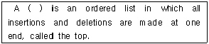
- stack
- queue
- list
- tree
(정답률: 75%)
20. E-R 모델의 표현 방법으로 옳지 않은 것은?
- 개체집합 : 사각형
- 관계집합 : 마름모
- 속성 : 오각형
- 연결 : 선
(정답률: 81%)
2과목: 전자 계산기 구조
21. 캐시기억장치에서 캐시에 적중되는 정도를 나타내는 식으로 옳은 것은?
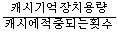
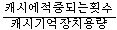
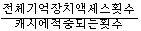
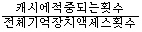
(정답률: 61%)
22. 다음 중 Access Time이 느린 것부터 나열된 것은?
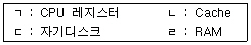
- ㄷㄹㄴㄱ
- ㄷㄹㄱㄴ
- ㄹㄷㄴㄱ
- ㄹㄴㄱㄷ
(정답률: 57%)
23. 주기억장치는 하드웨어의 특성상 주기억장치가 제공할 수 있는 정보 전달능력에 한계가 있는데, 이 한계를 무엇이라 하는가?
- 주기억장치 전달(transfer)
- 주기억장치 접근폭(accesswidth)
- 주기억장치 대역폭(bandwidth)
- 주기억장치 정보 전달폭(transferwidth)
(정답률: 69%)
24. 논리 함수식 F(A,B,C,D)=Σ(0,2,4,5,8,11,14,15)을 간략화 하였을 때 옳은 것은?
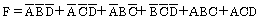
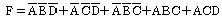
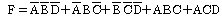
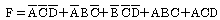
(정답률: 43%)
25. 논리연산 명령을 사용해서 기억영역을 clear 시킬 수 없는 것은?
- exclusive OR 연산 한다.
- 0(zero)으로 mask 씌운 AND 연산한다.
- 원하는 비트 수만큼 왼쪽으로 rotate 한다.
- 원하는 비트 수만큼 왼쪽으로 논리 shift 한다.
(정답률: 48%)
26. CPU에서 DMA 제어기로 보내는 자료가 아닌 것은?
- DMA를 시작시키는 명령
- 입ㆍ출력 하고자 하는 자료의 양
- 입력 또는 출력을 결정하는 명령
- 입ㆍ출력에 사용할 CPU 레지스터에 대한 정보
(정답률: 48%)
27. 공유기억장치 다중프로세서 시스템에서 사용되는 상호연결 구조가 아닌 것은?
- 버스(bus)
- 큐브(cube)
- 크로스바 스위치
- 다단계 상호연결망
(정답률: 40%)
28. 4096x16의 용량을 가진 주기억장치가 있다. 메모리 버퍼 레지스터(MBR)는 몇 비트의 레지스터인가?
- 4
- 16
- 32
- 4096
(정답률: 67%)
29. 하드웨어 우선순위 인터럽트의 특징으로 옳은 것은?
- 가격이 싸다.
- 응답 속도가 빠르다.
- 유연성이 있다.
- 우선순위는 소프트웨어로 결정한다.
(정답률: 66%)
30. 인터럽트 체제에서 우선순위 부여 방법과 거리가 먼 것은?
- Polling
- Interrupt Service Routine
- Interrupt Request Chain
- Interrupt Priority Chain
(정답률: 44%)
31. 다음은 인터럽트 체제의 동작을 나열한 것이다. 수행 순서를 올바르게 표현한 것은?
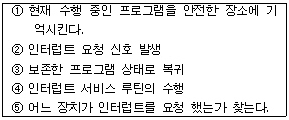
- ②→⑤→①→③→④
- ②→①→④→⑤→③
- ②→④→①→⑤→③
- ②→①→⑤→④→③
(정답률: 71%)
32. 주기억장치의 용량이 512KB인 컴퓨터에서 32비트의 가상주소를 사용하는데, 페이지의 크기가 1K워드이고 1워드가 4바이트라면 실제 페이지 주소와 가상페이지 주소는 몇 비트씩 구성되는가?
- 실제 페이지 주소 = 7, 가상 페이지 주소 = 12
- 실제 페이지 주소 = 7, 가상 페이지 주소 = 20
- 실제 페이지 주소 = 19, 가상 페이지 주소 = 12
- 실제 페이지 주소 = 19, 가상 페이지 주소 = 32
(정답률: 36%)
33. 반가산기 회로의 carry(C)와 sum(S)을 나타내는 논리식은?
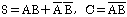
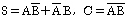
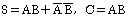
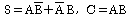
(정답률: 61%)
34. 기억장치의 주소와 그 내용이 다음의 표와 같다고 할 때, 어셈블리어로 LOAD 120 이란 명령이 직접 주소 방식이라면 오퍼랜드는 무엇이 되는가?
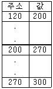
- 120
- 200
- 270
- 300
(정답률: 65%)
35. 마이크로오퍼레이션에 대한 설명으로 옳지 않은 것은?
- 마이크로 오퍼레이션이란 컴퓨터의 모든 명령을 구성하고 있는 몇 가지 종류의 기본 동작이다.
- 컴퓨터에서 수행이 가능한 마이크로 오퍼레이션의 종류는 그 컴퓨터 내에 존재하는 레지스터들과 연산기의 종류, 그들 서로 간에 연결된 형태로 의해 결정된다.
- 일반적으로 마이크로 오퍼레이션은 F(R,R)→R 마이크로 오퍼레이션과 R→R 마이크로 오퍼레이션으로 구분하며 이 때 F는 처리기를 의미한다.
- F(R,R)→R 마이크로 오퍼레이션은 자료의 처리나 변형없이 다른 레지스터로 자료가 옮겨지는 마이크로 오퍼레이션이다.
(정답률: 49%)
36. 다음 중 S/W 문제로 프로그램에 오류가 없는데도 인터럽트가 발생하는 경우는?
- 0(zero) 으로 나눌 때
- 금지된 자원의 접근 시도
- 불법 연산자 사용
- 페이지 폴트(page fault)
(정답률: 51%)
37. 어떤 명령을 수행할 수 있는 일련의 제어 워드가 특수한 기억 장치 속에 저장된 것을 무엇이라 하는가?
- 제어 메모리
- 제어 데이터
- 고정배선제어
- 마이크로프로그램
(정답률: 48%)
38. 짝수 패리티 비티의 해밍 코드로 0011011을 받았을 때 오류가 수정된 정확한 코드로 옳은 것은?
- 0111011
- 0001011
- 0011001
- 0010101
(정답률: 42%)
39. 명령어의 주소(address)부로 유효주소로 이용하는 방법은?
- 상대 주소
- 즉시 주소
- 절대 주소
- 직접 주소
(정답률: 49%)
40. 10110101 이라는 이진 자료가 2’s complement 방식으로 표현되어 있다. 이를 우측으로 3비트만큼 산술적 이동(Arithmetic shift) 하였을 때의 결과는?
- 11110110
- 11010110
- 10000110
- 00010110
(정답률: 40%)
3과목: 운영체제
41. 운영체제의 성능평가 기준 중 일정 시간 내에 시스템이 처리하는 일의 양을 의미하는 것은?
- Throughput
- Turn around time
- Reliability
- Availability
(정답률: 53%)
42. 주기억장치를 다음과 같이 분할할 경우 내부 단편화와 외부 단편화의 크기는?
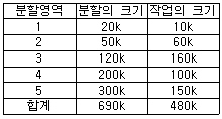
- 내부 단편화 260k, 외부 단편화 170k
- 내부 단편화 170k, 외부 단편화 260k
- 내부 단편화 690k, 외부 단편화 480k
- 내부 단편화 160k, 외부 단편화 270k
(정답률: 58%)
43. 로더(Loader)의 종류 중 다음 설명에 해당하는 것은?
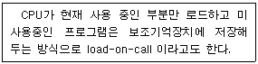
- 절대 로더(Absolute Loader)
- 재배치 로더(Relocation Loader)
- 동적 적재로더(Dynamic Loading Loader)
- 오버레이 로더(Overlay Loader)
(정답률: 65%)
44. 다음의 페이지 참조 열(Page reference string)에 대해 페이지 교체 기법으로 FIFO를 사용할 경우 페이지 폴트 회수는?(단, 할당된 페이지 프레임 수는 3 이고, 처음에는 모든 프레임이 비어 있음)
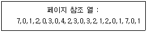
- 6
- 12
- 15
- 20
(정답률: 57%)
45. 교착상태와 은행원 알고리즘의 불안전 상태(unsafe State)에 대한 설명 중 옳은 것은?
- 교착상태는 불안전 상태에 속한다.
- 불안전 상태의 모든 시스템은 궁극적으로 교착상태에 빠지게 된다.
- 불안전 상태는 교착상태에 속한다.
- 교착상태와 불안전 상태는 서로 무관하다.
(정답률: 47%)
46. SSTF 스케줄링에 대한 설명으로 옳은 것은?
- 탐색 거리가 가장 긴 요청이 먼저 서비스를 받는다.
- 응답시간의 편차가 거의 없으므로 대화형 시스템에 적합하다.
- 헤드에서 먼 곳에 대한 요청은 기아상태(Starvation)를 일으킬 수 있다.
- 헤드가 제일 바깥쪽 트랙에서 안쪽으로 이동하면서 진행 방향에 있는 요구를 차례대로 서비스한다.
(정답률: 58%)
47. 파일 디스크립터에 대한 설명으로 옳지 않은 것은?
- 파일디스크립터는 해당 파일의 OPEN에 상관없이 주기억장치에 상주한다.
- 파일 디스크립터는 파일마다 독립적으로 존재한다.
- “File Control Block”이라고도 한다.
- 파일디스크립터는 시스템에 따라 다른 구조를 가질 수 있다.
(정답률: 62%)
48. UNIX에서 쉘(Shell)에 대한 설명으로 옳지 않은 것은?
- 사용자 명령을 받아 해석하고 수행시키는 명령어 해석기이다.
- 프로세스 관리, 기억장치 관리, 파일 관리 등의 기능을 수행한다.
- 시스템과 사용자 간의 인터페이스를 담당한다.
- 커널처럼 메모리에 상주하지 않기 때문에 필요할 경우 교체될 수 있다.
(정답률: 63%)
49. 운영체제의 목적으로 거리가 먼 것은?
- 사용자 인터페이스 제공
- 주변 장치 관리
- 원시 프로그램의 기계어 번역
- 신뢰성 향상
(정답률: 76%)
50. 하나의 프로세스가 작업 수행 과정에서 수행하는 기억 장치 접근에서 지나치게 페이지 폴트가 발생하여 프로세스 수행에 소요되는 시간보다 페이지 이동에 소요되는 시간이 더 커지는 현상은?
- 스레싱(Thrashing)
- 워킹셋(Working set)
- 세마포어(Semaphore)
- 교환(Swapping)
(정답률: 73%)
51. 프로세스(Process)에 대한 설명이 아닌 것은?
- 실행 가능한 PCB를 가진 프로그램
- 더 이상 계속할 수 없는 어떤 특정 사건을 기다리고 있는 상태
- 프로세서가 할당하는 개체로서 디스패치가 가능한 단위
- 목적 또는 결과에 따라 발생되는 사건들의 과정
(정답률: 71%)
52. 128개의 CPU로 구성된 하이퍼큐브에서 각 CPU는 몇 개의 연결점을 갖는가?
- 6
- 7
- 8
- 10
(정답률: 68%)
53. 주기억장치 관리기법으로 최악 적합(Worst-fit) 방법을 이용할 경우 10K 크기의 프로그램은 다음과 같이 분할되어 있는 주기억장치 중 어느 부분에 할당되어야 하는가?
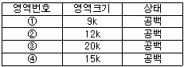
- 영역 번호 ①
- 영역 번호 ②
- 영역 번호 ③
- 영역 번호 ④
(정답률: 75%)
54. 스레드(Thread)에 대한 설명으로 옳지 않은 것은?
- 한 개의 프로세스는 여러 개의 스레드를 가질 수 없다.
- 커널 스레드의 경우 운영체제에 의해 스레드를 운용한다.
- 사용자 스레드의 경우 사용자가 만든 라이브러리를 사용하여 스레드를 운용한다.
- 스레드를 사용함으로써 하드웨어, 운영체제의 성능과 응용프로그램의 처리율을 향상시킬 수 있다.
(정답률: 73%)
55. 다중 처리기 운영체제 구성에서 주/종(Master/Slave) 처리기 시스템에 대한 설명으로 옳지 않은 것은?
- 주프로세서는 입/출력과 연산을 담당한다.
- 종프로세서는 입/출력 위주의 작업을 처리한다.
- 주프로세서만이 운영체제를 수행한다.
- 주프로세서에 문제가 발생하면 전 시스템이 멈춘다.
(정답률: 61%)
56. 파일시스템의 디렉토리 구조 중 다음 설명에 해당하는 것은?
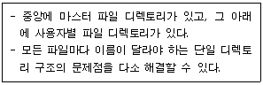
- 일반적 그래프 디렉토리 구조
- 2단계 디렉토리 구조
- 비순환 그래프 디렉토리 구조
- 트리 디렉토리 구조
(정답률: 64%)
57. 시간적 구역성(Temporal locality)과 거리가 먼 것은?
- 루프
- 서브루틴
- 배열 순회
- 스택
(정답률: 51%)
58. 보안 유지 방식 중 사용자의 신원을 확인한 후 권한이 있는 사용자에게만 시스템에 접근하게 하는 방법은?
- 운용보안
- 시설보안
- 사용자 인터페이스 보안
- 내부보안
(정답률: 66%)
59. UNIX에서 부모 프로세스가 자식 프로세스를 생성하는 명령어는?
- mknod
- creat
- fork
- cp
(정답률: 60%)
60. 준비상태 큐에 프로세스 A, B, C가 차례로 도착하였다. 라운드로빈(Round Robin)으로 스케줄링할 때 타임 슬라이스를 4초로 한다면 평균 반환 시간은?
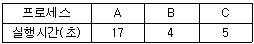
- 12초
- 14초
- 17초
- 18초
(정답률: 50%)
4과목: 소프트웨어 공학
61. 프로토타이핑 모형에 대한 설명으로 옳지 않은 것은?
- 프로토타이핑 모형은 발주자나 개발자 모두에게 공동의 참조 모델을 제공한다.
- 사용자의 요구사항을 충실히 반영할 수 있다.
- 프로토타이핑 모형은 소프트웨어 생명주기에서 유지보수가 없어지고 개발 단계 안에서 유지보수가 이루어지는 것으로 불 수 있다.
- 최종 결과물이 만들어지는 소프트웨어 개발 완료 시점에서 최초로 오류 발견이 가능하다.
(정답률: 66%)
62. 소프트웨어 설계시 고려 사항으로 거리가 먼 것은?
- 전체적이고 포괄적인 개념을 설계한 후 차례로 세분화하여 구체화시켜 나간다.
- 요구사항을 모두 구현해야 하고 유지보수가 용이해야 한다.
- 모듈은 독립적인 기능을 갖도록 설계해야 한다.
- 모듈간의 상관성은 높이고 변경이 쉬워야 한다.
(정답률: 56%)
63. 블랙박스 테스트를 이용하여 발견할 수 있는 오류의 경우로 거리가 먼 것은?
- 비정상적인 자료를 입력해도 오류처리를 수행하지 않는 경우
- 정상적인 자료를 입력해도 요구된 기능이 제대로 수행되지 않는 경우
- 반복 조건을 만족하는데도 루프 내의 문장이 수행되지 않는 경우
- 경계값을 입력할 경우 요구된 출력 결과가 나오지 않는 경우
(정답률: 57%)
64. 소프트웨어 프로젝트 계획 수립시 소프트웨어 영역(범위)결정의 주요 요소로 거리가 먼 것은?
- 기능
- 인적 자원
- 인터페이스
- 성능
(정답률: 62%)
65. 소프트웨어 컴포넌트(Component) 재사용의 이점이라고 볼 수 없는 항목은?
- 소프트웨어의 품질 향상
- 개발 담당자의 생산성 향상
- 개발 비용의 절감
- 응용 소프트웨어의 보안 유지
(정답률: 66%)
66. 소프트웨어 재공학은 어떤 유지보수 측면에서 소프트웨어 위기를 해결하려고 하는 방법인가?
- 수정(Corrective) 유지 보수
- 적응(Adaptive) 유지 보수
- 완전화(Perfective) 유지 보수
- 예방(Preventive) 유지 보수
(정답률: 36%)
67. CASE에 대한 설명으로 거리가 먼 것은?
- 소프트웨어 모듈의 재사용성이 향상된다.
- 자동화된 기법을 통해 소프트웨어 품질이 향상된다.
- 소프트웨어 사용자들이 소프트웨어 사용 방법을 신속히 숙지할 수 있도록 개발된 자동화 패키지이다.
- 소프트웨어 유지보수를 간편하게 수행할 수 있다.
(정답률: 60%)
68. 하나 이상의 유사한 객체들을 묶어 하나의 공통된 속성을 표현한 것으로 자료 추상화의 개념으로 볼 수 있는 것은?
- 클래스(Class)
- 인스턴스(Instance)
- 메소드(Method)
- 메시지(Message)
(정답률: 73%)
69. 소프트웨어에 대한 변경을 관리하기 위해 개발된 일련의 활동을 나타내며, 이런 변경에 의해 전체 비용이 최소화되고 최소한의 방해가 소프트웨어의 현 사용자에게 야기되도록 보증하는 것을 목적으로 하는 것은?
- 위험 관리
- 형상 관리
- 프로젝트 관리
- 유지보수 관리
(정답률: 65%)
70. 객체 지향의 기본 개념 중 객체가 메시지를 받아 실행해야 할 객체의 구체적인 연산을 정의한 것은?
- 메소드
- 추상화
- 상속성
- 캡슐화
(정답률: 76%)
71. 객체 지향 기법에서 다음 설명에 해당하는 것으로 가장 타당한 것은?
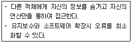
- Abstraction
- Information Hiding
- Inheritance
- Polymorphism
(정답률: 65%)
72. LOC 기법에 의하여 예측된 총 라인수가 25000 라인일 경우 개발에 투입될 프로그래머의 수가 5명이고, 프로그래머들의 평균 생산성이 월당 500 라인일 때, 개발에 소요되는 기간은?
- 8개월
- 9개월
- 10개월
- 11개월
(정답률: 78%)
73. 소프트웨어 품질목표 중 새로운 요구사항에 접하여 쉽게 수정될 수 있는 시스템 능력을 요구하는 것은?
- Reliability
- Efficiency
- Integrity
- Flexibility
(정답률: 62%)
74. 응집도의 종류 중 서로간에 어떠한 의미 있는 연관관계도 지니지 않은 기능요소로 구성되는 경우이며, 서로 다른 기능을 수행하는 경우의 응집도는?
- Coincidental Cohesion
- Functional Cohesion
- Sequential Cohesion
- Logical Cohesion
(정답률: 40%)
75. SOFTWARE Project의 비용 결정 요소와 가장 관련이 적은 것은?
- 개발자의 능력
- 요구되는 신뢰도
- 하드웨어의 성능
- 개발제품의 복잡도
(정답률: 56%)
76. 람바우의 객체 지향 분석과 거리가 먼 것은?
- 정적 모델링
- 기능 모델링
- 동적 모델링
- 객체 모델링
(정답률: 69%)
77. 기존 소프트웨어를 분석하여 소프트웨어 개발과정과 데이터 처리과정을 설명하는 분석 및 설계 정보를 재발견하거나 다시 만들어 내는 작업을 무엇이라 하는가?
- 순공학
- 역공학
- 재구축
- 전공학
(정답률: 71%)
78. 구조적 분석 도구와 거리가 먼 것은?
- 자료 사전
- 자료 흐름도
- 프로그램 명세서
- 소단위 명세서
(정답률: 32%)
79. 소프트웨어의 새로운 기능을 추가하거나 성능을 개선하는 활동으로서, 소프트웨어 유지보수 활동 중 가장 많은 비용이 소요되는 것은?
- 수정(Corrective) 보수
- 예방(Preventive) 보수
- 완전화(Perfective) 보수
- 적응(Adaptive) 보수
(정답률: 54%)
80. 프로젝트 일정을 관리하는 PERT 차트로 알 수 있는 사항이 아닌 것은?
- 결정 경로
- 태스크의 시작/종료 시간
- 태스크에 대한 경계시간
- 태스크간의 상호관련성
(정답률: 32%)
5과목: 데이터 통신
81. ARQ 방식 중 Go-Back-N과 Selective Repeat ARQ에 대한 설명으로 옳지 않은 것은?
- Go-Back-N은 오류 발생 이후의 모든 프레임을 재요청한다.
- Selective Repeat ARQ 버퍼의 사용량이 상대적으로 크다.
- Go-Back-N은 프레임의 송신순서와 수신 순서가 동일해야 수신이 가능하다.
- Selective Repeat ARQ는 여러 개의 프레임을 묶어서 수신확인을 한다.
(정답률: 40%)
82. 회선 교환(circuit switching)에 대한 설명으로 옳지 않은 것은?
- 송신스테이션과 수신스테이션 사이에 데이터를 전송하기 전에 먼저 교환기를 통해 물리적으로 연결이 이루어져야 한다.
- 음성이나 동영상과 같이 연속적이면서 실시간 전송이 요구되는 멀티미디어 전송 및 에러 제어와 복구에 적합하다.
- 현재 널리 사용되고 있는 전화시스템을 대표적인 예로 들 수 있다.
- 송/수신스테이션 간에 호 설정이 이루어지고 나면 항상 정보를 연속적으로 전송할 수 있는 전용 통신로가 제공되는 셈이다.
(정답률: 62%)
83. 전송제어문자의 내용을 기술한 것 중 옳지 않은 것은?
- STX : 본문의 개시 및 헤딩의 종료를 표시한다.
- SOH : 정보 메시지의 헤딩의 개시를 표시한다.
- ETX : 본문의 시작을 표시한다.
- SYN : 문자 동기를 유지한다.
(정답률: 68%)
84. 네트워크에 연결된 시스템은 논리구조를 가지고 있으며, 이 논리주소를 물리주소로 변환시켜 주는 프로토콜은?
- RARP
- NAR
- PVC
- ARP
(정답률: 63%)
85. 송신측에서 정보비트에 오류 정정을 위한 제어 비트를 추가하여 전송하면 수신측에서 이 비트를 사용하여 에러를 검출하고 수정하는 방식은?
- Go back-N 방식
- Selective Repeat 방식
- Stop and Wait 방식
- Forward Error Correction 방식
(정답률: 58%)
86. 데이터 전송을 하고자 하는 모든 단말 장치는 서로 대등한 입장에 있으며, 송신 요구를 먼저 한 쪽이 송신권을 갖는 방식은?
- Contention 방식
- Polling 방식
- Selecting 방식
- Routing 방식
(정답률: 44%)
87. 하나의 통신채널을 이용하며 데이터의 송신과 수신이 교번식 으로 가능한 통신방식은?
- 반이중 통신
- 전이중 통신
- 단방향 통신
- 시분할 통신
(정답률: 67%)
88. 인터네트워킹(internetworking)을 위한 장비에 해당하지 않는 것은?
- Router
- Switch
- Bridge
- Firewall
(정답률: 69%)
89. FDM(Frequency-Division Multiplexing)방식의 설명으로 옳지 않은 것은?
- 주파수 분할 다중화는 전화의 장거리 전송망에 도입되어 사용되어 있다.
- 가변 파장 송신장치(tunable laser), 가변 파장 수신장치(tunable filter)를 사용하여 특정채널을 선택한다.
- 여러 신호를 전송 매체의 서로 다른 주파수 대역을 이용하여 동시에 전송하는 기술이다.
- 인접한 채널 간의 간섭을 막기 위해 일반적으로 보호대역(Guard Band)을 사용한다.
(정답률: 37%)
90. 데이터의 전송 중 한 비트에 에러가 발생했을 경우 이를 수신측에서 정정할 목적으로 사용되는 것은?
- P/F
- HRC
- Checksum
- Hamming code
(정답률: 67%)
91. PCM(Pulse Code Modulation) 방식에서 PAM(Pulse Amplitude Modulation)신호를 얻는 과정은?
- 표본화
- 양자화
- 부호화
- 코드화
(정답률: 43%)
92. OSI 7계층 중 Data link 계층의 프로토콜과 관련이 없는 것은?
- X.25
- HDLC
- LLC
- PPP
(정답률: 49%)
93. 토큰링 방식에 사용되는 네트워크 표준안은?
- IEEE 802.2
- IEEE 802.3
- IEEE 802.5
- IEEE 802.6
(정답률: 57%)
94. 전송시간을 일정한 간격으로 시간 슬롯(time slot)으로 나고, 이를 주기적으로 각 채널에 할당하는 다중화 방식은?
- Code Division Multiplexing
- Wavelength Division Multiplexting
- Space Division Multiplexting
- Synchronous Time Division Multiplexing
(정답률: 72%)
95. OSI 7계층 중 암호화, 코드변환, 데이터 압축 등의 역할을 담당하는 계층은?
- Data link Layer
- Application Layer
- Presentation Layer
- Session Layer
(정답률: 44%)
96. 디지털 변조에서 디지털 데이터를 아날로그 신호로 변환시키는 것을 키잉(Keying)이라고 하며, 키잉은 기본적으로 3가지 방식이 있다. 이에 해당하지 않는 것은?
- Amplitude-Shift Keying
- Code-Shift Keying
- Frequency-Shift Keying
- Phase-Shift Keying
(정답률: 54%)
97. TCP/IP 프로토콜의 계층 구조 중 응용계층에 해당하는 프로토콜로 옳지 않은 것은?
- ICMP
- Telnet
- FTP
- SMTP
(정답률: 53%)
98. IP address에 관한 설명으로 옳지 않은 것은?
- 5개의 클래스(A,B,C,D,E)로 분류되어 있다.
- A,B,C 클래스만이 네트워크 주소와 호스트 주소 체계의 구조를 가진다.
- D 클래스 주소는 멀티캐스팅(multicasting)을 사용하기 위해 예약되어 있다.
- E 클래스는 특수 목적 주소로 공용으로 사용된다.
(정답률: 45%)
99. WAN과 LAN의 설명으로 옳지 않은 것은?
- WAN은 국가망 또는 각 국가의 공중통신망을 상호 접속시키는 국제정보통신망으로 설계 및 구축, 운용된다.
- LAN은 사용자 구내망으로 구축되며, 제한된 영역에서의 구내 사설 데이터 통신망으로 운영될 수 있다.
- LAN의 대표적인 예로는 일반 음성 전화망인 PSTN, 패킷 교환 데이터 통신망인 PSDN등이 있다.
- WAN은 공중 통신망 사업자가 구축하고, 일반 대중 기업자들에게 보편적인 정보통신 서비스를 제공한다.
(정답률: 50%)
100. 데이터 통신에서 오류를 검출하는 기법으로 옳지 않은 것은?
- Parity Check
- Block Sum Check
- Cyclic Redundancy Check
- Huffman Check
(정답률: 54%)